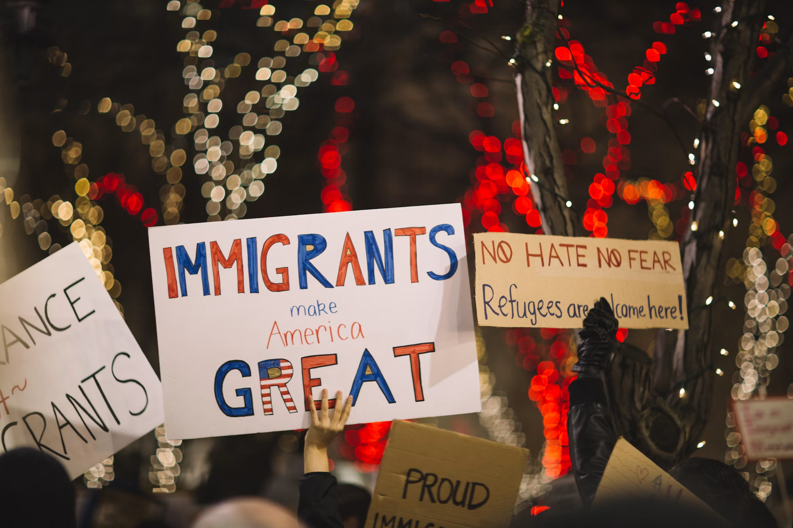
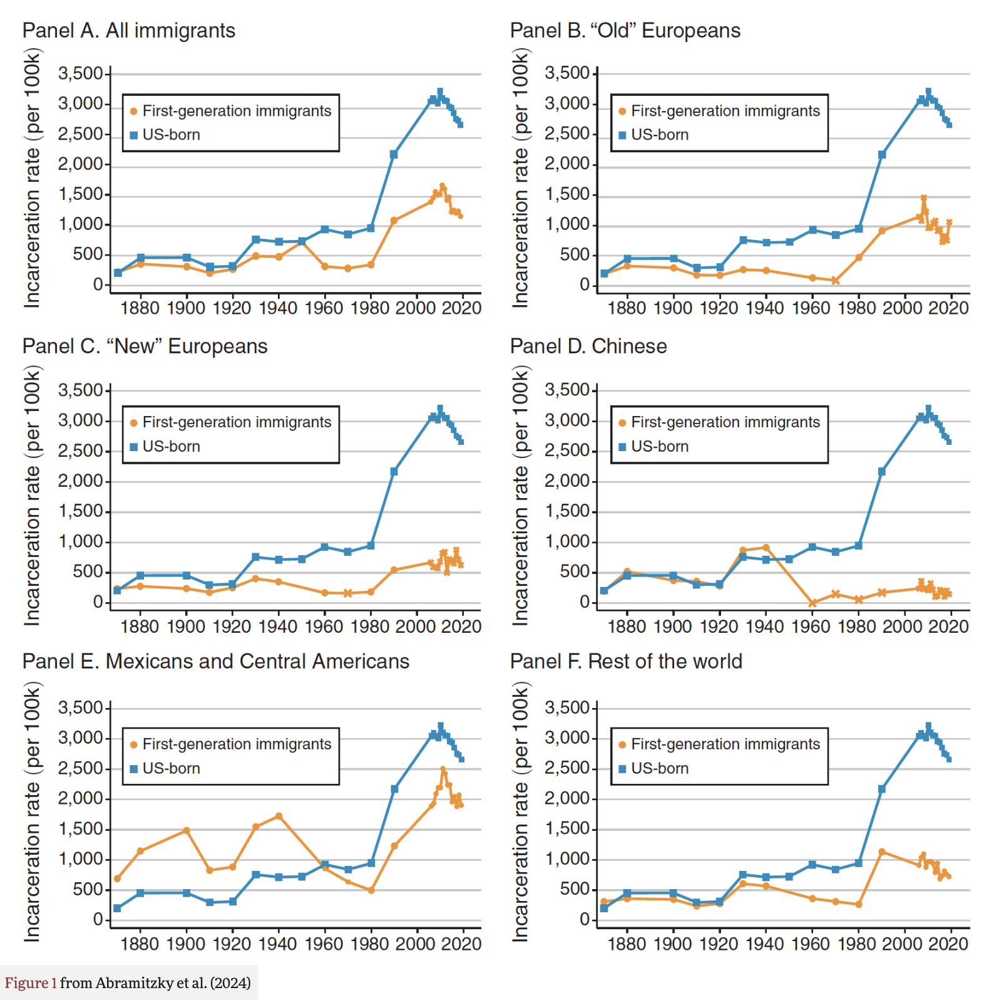

Essay
Introduction
Year by year, immigrants immigrate to the USA in search of hope and opportunity. My family is one of those immigrants. My dad actually immigrated twice. The first time was to escape his home country, Myanmar, during the military takeover of the government. He immigrated to Macau, where he met my mom, who had just escaped from the communist rule in China to seek asylum. Their lives were tough; they worked hard shifts to even afford a small, rundown apartment that would always have leaks. In hopes of having a better life, they then immigrated to the US, and that was where I was born.

Many immigrants share similar stories to mine, coming from hard lives and seeking opportunity in the US. This TED Talk from Tan Le, tells her own story of immigration (Le).
Hi, my name is Ivan, and I come from a first-generation immigrant family. Luckily, my family and I did end up having a better life, enough for me to even head to college. I have been a student of LATI10 at the University of California, San Diego. In that class, we tackle issues like hegemony, racism, and oppression specifically in the Global South. Over the course of analyzing different materials, such as how Guatemala was portrayed by the USA in the past and the events during the Chilean dictatorship conducted by Pinochet. All of which have their own cases of oppression. This then leads to my topic of how immigration and immigrants are treated in the USA.
Trump’s Take on US Immigrants
Since Trump’s presidency, even in his first term in office, he proudly stood on being hard against immigration. This was even shown by this quote from Trump himself:
“I am going to create a new special deportation task force, focused on identifying and removing quickly the most dangerous criminal illegal immigrants in America” (PBS NewsHour)
This clearly shows his distaste for illegal immigrants and labels all illegal immigrants as people who are dangerous, when it is completely false. This is proven from an historical analysis of incarceration (being confined in a prison or jail) by two groups, US-born vs. first-generation immigrants.
60%
less likely to be incarcerated than people born in the United States

According to Merriam-Webster, hegemony is described as “strong influence or authority over others” (Merriam-Webster Dictionary). The quote from Trump closely ties to this definition, as Trump wanted to create a political task force to have control over the immigrant community.